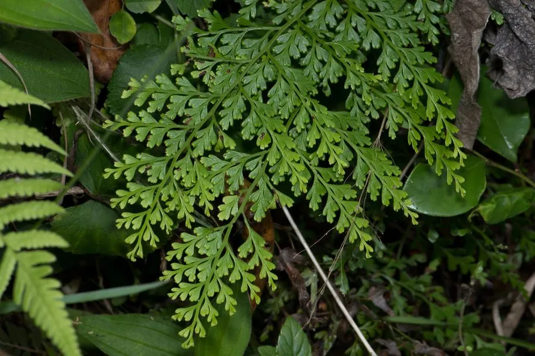

蕨类与裸子植物 · 植物界
乌蕨 Odontosoria chinensis

乌蕨的末回小羽片呈楔形、绿色鲜亮，叶形像孔雀的尾羽，全草可以入药，有清热解毒、利湿的功效。
- 分类
- 门蕨类植物门纲水龙骨纲目水龙骨目科鳞始蕨科属乌蕨属
- 栖息环境
- 南方山地林下、溪边与阴湿山坡，喜温暖湿润半阴
- 地理分布
- 中国长江以南各地，东亚、东南亚也有分布
- 保护级别
- 暂无评估；野生种群常见
物种志
乌蕨是鳞始蕨科多年生蕨类，株高 0.3–0.8 m。根状茎横走，密生鳞片。叶近生或簇生，叶柄细长；叶片四回羽状细裂，末回小羽片楔形或倒卵形，边缘有齿，叶面深绿色、有光泽，叶背色淡。孢子囊群生于小羽片顶端，囊群盖线形或杯形。整个叶形轻盈如羽毛。
乌蕨喜温暖湿润、半阴环境，多生于南方山地林下、溪边与阴湿山坡，在华南、西南地区很常见。它以孢子繁殖，根状茎可蔓延。乌蕨全草在民间入药，称“乌韭”，有清热解毒、利湿、止血之效，用于感冒发热、肠炎、外伤出血等症；也可作为观叶蕨类栽培。乌蕨对生境要求不高，是南方林下常见的优势蕨类之一，在生态修复中也可作为地被材料。
形态与习性
- 株高0.3–0.8 m
- 叶四回羽状细裂，末回小羽片楔形
- 孢子囊群生于小羽片顶端
- 药用全草称“乌韭”，清热解毒利湿
- 用途观叶与林下地被
趣味知识
- 乌蕨的叶片细裂如羽毛，是南方林下常见的蕨类。
- 它的末回小羽片呈楔形，是辨认它的特征之一。
- 民间把乌蕨全草叫“乌韭”，用来清热解毒、利湿。